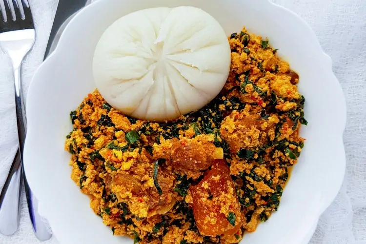

Pounded Yam and Egusi

Description
Pounded Yam and egusi soup recipes are very popular Nigerian cuisine.
Pounded Yam is made from ground yam or cassava flour, egusi seeds, dried fish, palm oil, onion, garlic, and other spices. Egusi soup is a Nigerian dish that is popular in West Africa. It is made from ground melon seeds and ground beans mixed with vegetable oil, onions, tomatoes, and salt. The mixture is then boiled to a thick consistency.
Ingredients
Pounded Yam
Egusi Soup
- Egusi (ground melon seeds)
- Palm oil
- Meat (beef, chicken, or any preferred protein)
- Stockfish (optional)
- Dry fish (optional)
- Crayfish (ground)
- Fresh or dried bitter leaves or spinach (substitute for traditional Ugu leaves)
- Onions (diced)
- Fresh peppers (such as habanero or Scotch bonnet)
- Seasoning cubes or powder (such as Maggi)
- Salt
- Locust beans (optional)
- Assorted vegetables (such as pumpkin leaves, ugu leaves, or bitter leaves)
- Ground crayfish (optional)
- Periwinkle (optional)
- Ogiri (optional)
Steps
Pounded Yam
- Peel the yam tubers and cut them into small, even-sized chunks.
- Rinse the yam chunks thoroughly to remove any dirt or impurities.
- Place the yam chunks in a large pot and add enough water to cover them.
- Place the pot on the stove over medium heat and cook until the yam is soft and tender. This usually takes about 20-30 minutes, depending on the size of the yam chunks.
- Once the yam is cooked, drain the water using a colander or sieve.
- Transfer the drained yam back to the pot and use a yam pounder or a sturdy wooden spoon to pound the yam until it becomes smooth and fluffy. Alternatively, you can use a blender or food processor to blend the yam until smooth.
- Serve the pounded yam hot with the egusi soup.
Egusi Soup
- Heat palm oil in a large pot or saucepan over medium heat.
- Add diced onions and sauté until they become translucent.
- Add the ground egusi and stir-fry for a few minutes until it starts to release its oil. Be careful not to burn it.
- Add the meat (previously cooked and tenderized) to the pot and stir well to coat it with the egusi.
- If using stockfish and dry fish, add them to the pot at this point.
- Add the ground crayfish, fresh or dried bitter leaves/spinach, and diced fresh peppers to the pot. Stir well.
- Season the mixture with salt, seasoning cubes/powder, and any other preferred spices or herbs.
- Add water or meat stock to achieve the desired consistency of the soup. Stir well and bring it to a simmer.
- Cover the pot and let the soup cook for about 20-30 minutes, or until the egusi is fully cooked and the flavors have melded together.
- If using locust beans and ogiri, add them to the pot and stir gently.
- Adjust the seasoning if needed and add more water if the soup is too thick.
- Finally, add the assorted vegetables (pumpkin leaves, ugu leaves, or bitter leaves) to the pot and cook for an additional 5 minutes until the vegetables are wilted.
- Remove from heat and let the egusi soup rest for a few minutes before serving.
- Serve the egusi soup hot with the pounded yam.
Enjoy your delicious pounded yam and egusi soup!